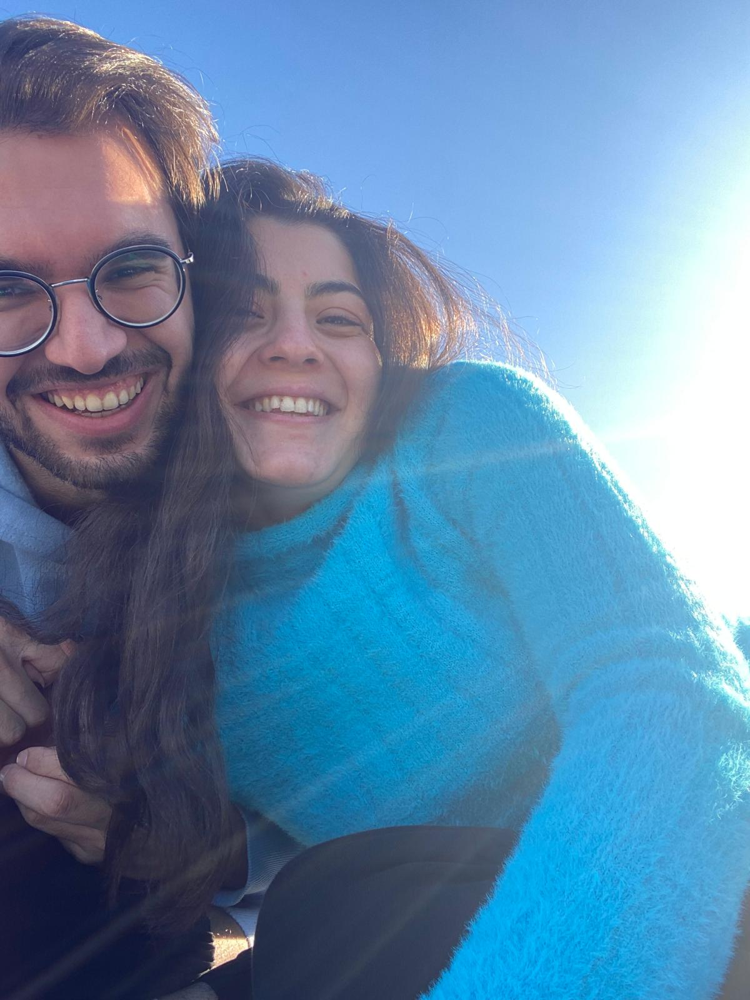
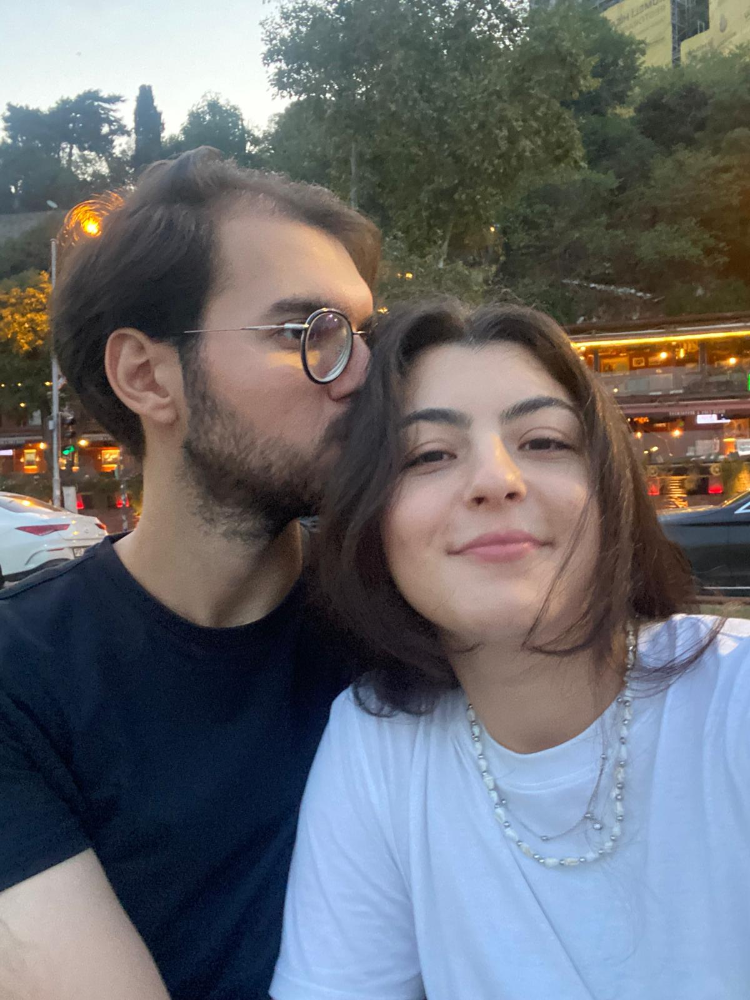

Şu günkü mutluluğun...

Aşkımızın zirvede olduğu zamanlar...

Müze gezelim be lütfen.

Ahhh ahhh 31.08.2023

Saçlarının kokusuna bayılıyorum bilgin olsun
Bu site senin için. Hep mutlu ol olur mu? Seni seviyorum...
Seni tanıdığım o ilk andan değil belki ama, o hazırlık döneminin son zamanlarından itibaren kalbim sana her geçen gün daha çok doldu, her geçen gün daha fazla aşık oldum. Bazen farkında olmadan seni üzdüm, kırdım, istemeden de olsa yordum, bazen senin demene rağmen de yaptım bunları. Ve biliyorum… sana her zaman iyi gelemedim (çoğunlukla).
Ama bilmeni isterim ki ben sana deliler gibi aşığım, seni çok çok seviyorum. Seninle vakit geçirmek, küçük anılar biriktirmek, bir gün içinde seni bin kez güldürebilmek, seninle aynı nefesi paylaşmak benim için her şeyden kıymetli, sen direkt en kıymetlimsin.
Hatta sadece bugünü değil, bir ömrü seninle geçirmek istiyorum. Sana her şeyinle layık olmak istiyorum. Ve burada, bu satırların içinde bir kez daha söz veriyorum:
Seni mutlu etmek için elimden gelen her şeyi yapacağım. Seni seveceğim, koruyacağım, üzdüğümde kendime kızacağım, kendimi cezalandıracağım.
Yüzsüzce, arsızca... belki bir tık mahcup ama tamamen içtenlikle söylüyorum:
Ben seni çok seviyorum. Ve hep seveceğim. Özür dilerim...
Şu günkü mutluluğun...
Aşkımızın zirvede olduğu zamanlar...
Müze gezelim be lütfen.
Ahhh ahhh 31.08.2023
Saçlarının kokusuna bayılıyorum bilgin olsun
Sevgilim benim elimi sıkı sıkı tutar mısın... beni bırakma... ben seni mutlu edeceğim... sevgim, aşkım yetmiyor bunun için farkındayım...
Bütün benliğimle seni mutlu edeceğim. Lütfen benden uzaklaşma...